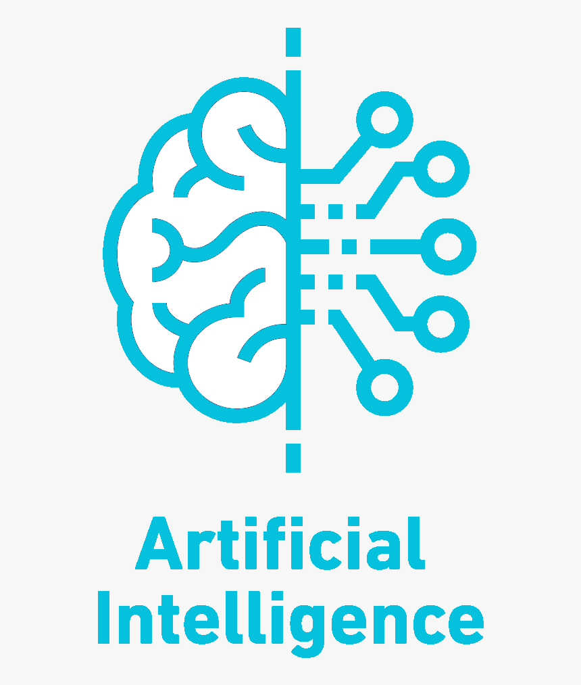

Introduction to AI Coursework
The coursework of this unit consists of two main parts:
First Part
In the first part, I did three main tasks as the following:
- - Task 1: I have built a regression model to predict the amount of nitrous oxide emitted, given values on the other sensors.
- - Task 2: I have built a decision tree from scratch in Python code (not using the built-in scikit-learn decision tree algorithm) to predict bicycles demand using other feature attributes.
- - Task 3: I have written a datasheet for the WikiArt Emotions Dataset http://saifmohammad.com/WebPages/wikiartemotions.html where I answered questions regarding motivation, composition, collection process, preprocessing, uses, distribution and maintenance of the dataset.
View Sample Report:
Second Part
Answered and explained the theory and math behind a lot of concepts taught in the unit including k-nearest neighbours, naive Bayes, search algorithms, probability and reinforcement learning.
View Sample Report: